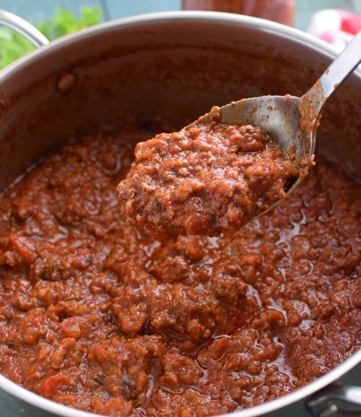

Bolognesa sauce

Description
The bolognesa sauce is one of the most delicious sauces you can eat your pasta with.
Ingredients
All you need to make this delicious sauce is:
- Minced beef
- Onions
- Garlic
- Tomato paste
- Red wine
- Condiments
Steps
- Chop the onions and garlic and saute them.
- When the onion is soft, add the minced beef with all the condiments of your choice. Move them from time to time to prevent it from losing water.
- When the meat is thoroughly cooked, add the tomato extract and some water. Leave it alone at minimum and move it every 20 minutes.
- Add the red wine and cook until the alcohol has evaporated.
- Serve with your favorite pasta!